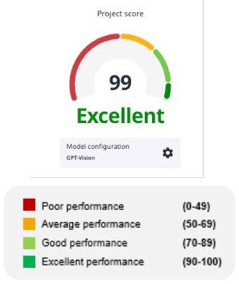
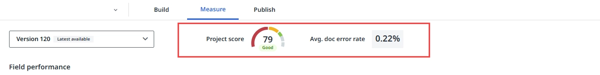
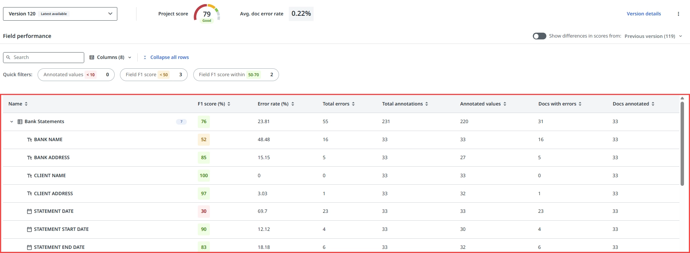
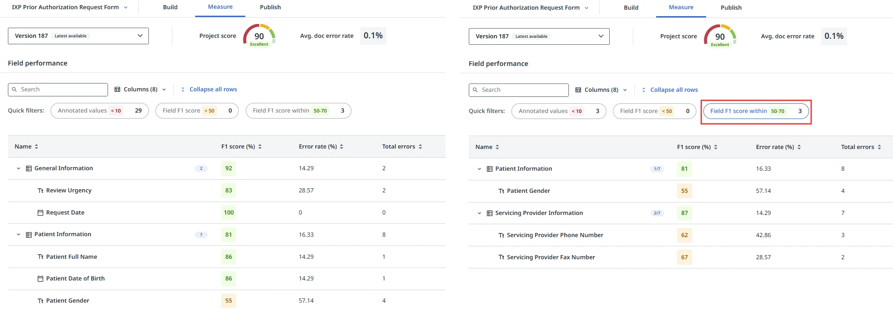

Part 2 – Practical: Building, Evaluating & Consuming
Building the Generative Extraction Project
Building a Generative Extraction project follows the same Build → Measure → Publish lifecycle as Modern DU projects, but uses generative AI prompts instead of annotated ML training.
Step 1: Create a New Generative Extraction Project
- Log into cloud.uipath.com and navigate to the Generative Extraction service
- Click New Project — choose Blank Project or a Template
- Give the project a name (e.g., Paystubs Extraction) and description
- Projects can only be created by an IXP Service Admin
Step 2: Upload Sample Documents
- Upload a representative sample of documents covering all layout variations
- Supported formats: PDF, PNG, JPG/JPEG, TIF/TIFF
- You can filter documents by annotated/unannotated status and search by document name
- No minimum number of documents required to start — predictions appear immediately
Step 3: Define the Extraction Schema (Taxonomy)
- Go to Manage Taxonomy
- Write a project-level instruction — describe the document type and industry context
- Click New Field Group — give it a name and instruction (e.g., "Employee Information")
- Add individual Fields within each group — specify name, data type, and instruction
- For hierarchical data, use
>in field group names (e.g., Paystub > Deductions)
Step 4: Review and Validate Predictions
- Once schema is defined, the AI immediately generates predictions for all uploaded documents
- Review each document — check if predictions are correct
- Modify prompt instructions and observe the impact on prediction quality
- Accept correct predictions or correct wrong ones to build ground truth
- Validated documents become the basis for performance evaluation in the Measure phase
Evaluating the Project (Measure Phase)
The Measure phase evaluates how well your model is performing before you deploy it to production. It uses your validated annotations as the ground truth.
Key Performance Metrics
- Project Score — overall model performance across all fields
- Precision — of all values the model extracted, how many were correct
- Recall — of all values that should have been extracted, how many did the model find
- F1 Score — harmonic mean of precision and recall; best single measure of performance
- Per-field performance — identify which specific fields need improvement

Project score display — shows performance levels and thresholds
Comparing Model Versions
Every time you change the extraction schema or validate more documents, Generative Extraction creates a new model version. In the Measure phase you can:
- Compare model versions side by side
- See field-level performance differences between versions
- Identify which fields need more annotation or better prompt instructions
- Decide which version is best suited for production deployment

Measure tab — project summary with version selection and high-level metrics
How to Improve Performance
- Refine field instructions — be more specific about expected format and edge cases
- Add more validated annotation examples (few-shot)
- Review low-scoring fields and adjust prompt wording
- Ensure the project-level instruction accurately describes the document type
- Annotate more diverse document samples to cover edge cases

Field performance table — precision, recall and F1 score per field

Quick filter — narrow down fields to identify underperforming areas
Consuming the Generative Extraction Project in Studio
Once your model meets performance criteria, publish it and integrate it into a UiPath Studio workflow.
Step 1: Publish the Model
- Go to the Publish tab in your Generative Extraction project
- Select the model version to deploy (based on your Measure results)
- Add deployment tags to identify the version (e.g., v1.0-production)
- Click Publish — the model becomes available as an API endpoint
- Copy the project ID / endpoint details for use in Studio
- To roll back, simply publish a previous model version
Step 2: Integrate in Studio Workflow
- Install
UiPath.DocumentUnderstanding.Activitiespackage in Studio - Add a Document Understanding Scope activity and connect to your Generative Extraction project
- Add Extract Document Data — pass the file path of each document
- Access extracted fields from the returned
DocumentDataobject - Add Present Validation Station for human-in-the-loop review if confidence is below threshold
- Export validated results to Excel, database, or downstream system
Supported Document Limits
| Parameter | Limit |
|---|---|
| Maximum document length | 150 pages (use DU with RAG for longer documents) |
| Supported file formats | PDF, PNG, JPG/JPEG, TIF/TIFF |
| AI infrastructure | Specialized UiPath models + Azure OpenAI LLMs (data residency maintained per region) |